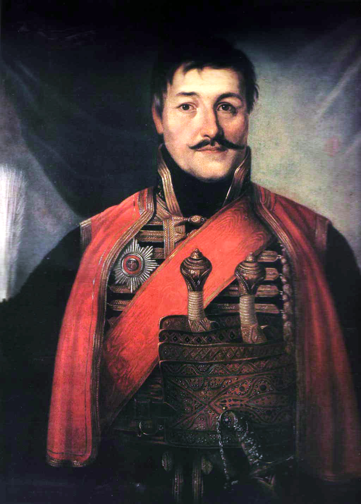

Karađorđe ili Crni Đorđe (pravo ime Đorđe Petrović) (Viševac kraj Rače Kragujevačke, 15. septembra 1768. – Radovanje kraj Velike Plane, 25. jula 1817.), osnivač dinastije Karađorđevića. Čuveni vođa (вожд) prvog srpskog ustanka protiv Otomanskog carstva. Smatra se ocem moderne Srbije.Istoričar Radoš Ljušić, koji je pisao Karađorđevu biografiju, smatra da se ne može tačno utvrditi Karađorđevo poreklo, jer postoji nekoliko različitih predanja. On smatra najverovatnijom verziju po kojoj Karađorđevi preci potiču iz Vasojevića.[1]
Prema ovoj verziji, u jednoj od poznatijih seoba srpskog naroda, pod patrijarhom Šakabentom 1737-39 , doselili su se Karađorđevi preci, najverovatnije, sa hercegovačko-crnogorskih brda u Šumadiju. Ova seoba, kao što je i dotad bivalo, usledila je kao posledica austrijsko-turskog rata 1737-1739, u kojem su učestvovali Srbi. Prezime mu je po ocu Petru.
Prema drugoj verziji, Karađorđe potiče od plemena Klimenti, po njegovom rođenom dedi koji se zvao Jovan Mršin Klimenta.[2] Ovu verziju su zastupali neki stariji srpski autori poput Dimitrija Tucovića, koji smatra da je Karađorđe bio albanskog porekla.[3] Tezu o albanskom poreklu Karađorđa zastupaju i neki noviji srpski[4] i strani[5] autori, koji navode da Karađorđevi potomci vode poreklo iz okoline Skadra, tzv. Gornje ili Visoke Albanije.[6]
Đorđe je rođen najverovatnije 16. novembra (po starom kalendaru 3.novembra) 1762. godine u Viševcu u Osmanskom carstvu (danas Srbija) na Đurđic, od oca Petra i majke Marice. Godina rođenja se ne može tačno utvrditi, a pominje se period od 1749. do 1770. godine.
Karađorđe potiče iz siromašne porodice. Majka mu je bila Marica Živković iz Masloševa u Šumadiji. Njegov otac je zbog siromaštva često menjao spahije i mesto boravka, s obzirom da Turci raju nisu preterano vezivali za baštinu. Kako je Đorđe stasavao i služio kod imućnijih Srba i Turaka, tako se i njihova materijalna situacija popravljala.1785/86.godine Đorđe Petrović se ženi Jelenom Jovanović. Prema nekim izvorima, Jelenini roditelji su bili imućniji i nisu dali svoju kćer, ali ju je Đorđe oteo i učinio svojom ženom. Posle ženidbe nije dugo ostao u Srbiji, jer je navodno ubio Turčina. Izbegao je u Srem sa svojom porodicom.
U tom zbegu se desio događaj koji je mnogo osporavan i izazvao velike polemike među istoričarima - oceubistvo. Najverovatnija priča je da je njegov otac, koji je godinama služio kod Turaka, u jednom trenutku odlučio da nagovori sve da se vrate i nastave da žive kao do sada, služeći Turke. Svi u zbegu su to razumeli kao pretnju da će se vratiti u ropstvo ili u smrt. Kada je uvideo da majčino preklinjanje oca da odustane od povratka ne pomaže i da ima podršku svih, digao je ruku na oca, a potom je njegovog oca Petra dotukao momak iz pratnje. Ubistvo je, po Vuku Karadžiću, učinjeno u ljutnji i iz ljubavi, i njime su spašeni svi iz zbega, a njegov otac sramote i ropstva. 1796. godine, po povratku u Srbiju, Karađorđe se ispovedio i zamolio za oproštaj, koji je od sveštenstva i naroda dobio.
Pred kraj austrijsko-turskog rata, 1787.godine, kod nas poznatijeg kao Kočina krajina, Karađorđe počinje da ratuje na strani Austrije protiv Turaka. Kao podoficir ratovao je neoklevajući da se ogleda sa neprijateljem i ubija ugledne turske junake. Sredinom 1791. zaključuje se mir, Karađorđe dobija unapređenje i medalju za hrabrost i odmeće se u hajduke, gde predvodi veliku hajdučku družinu. 1793/94. dolazi do opadanja hajdučije i Đorđe se povlači i živi mirno sa porodicom u Topoli.
Kraj 18-og i početak 19-tog veka donosi povećanje zuluma koji su Turci činili nad srpskim narodom. Ogromni nameti, samovolja i terorisanje naroda od strane Turaka i janjičara, gušenje svakog otpora dovode do udruživanja srpskih velikaša i dogovorima oko pobune.
Povod za Prvi srpski ustanak bio je krvavi događaj, poznat kao seča knezova. O tome je pevao Filip Višnjić u čuvenoj pesmi Početak bune protiv dahija. Posecanjem viđenijih srpskih glava, Turci su hteli da zaplaše srpski narod i onemoguće ustanak za koji su znali da se sprema.
Na narodnom zboru u Orašcu Karađorđe je izabran za vođu ustanka i tako je stao na čelo izmučenog srpskog naroda u borbi protiv Turaka. Ne može se tačno reći kada je održan zbor u Orašcu, ali se uzima najčešće pominjani datum, a to je Sretenje Gospodnje, 15. februar 1804. godine (2.februar po starom kalendaru). Karađorđe je lično obilazio narod i dogovarao sa ostalim vođama tok borbe i pripreme za ustanak. Kao strog i dosledan, uživao je autoritet u narodu i među drugim vođama. Ostalo je zapisano da su ga se plašili zbog preke naravi i zbog spremnosti da bez kompromisa dođe do cilja. Iza njega su ostale mnoge pobede često nad brojnijom i opremljenijom turskom vojskom: Ivankovac, Mišar, Novi Pazar, Varvarin...
Nakon mira u Bukureštu dolazi do nesloge među ljudstvom što se odrazilo i na delovanje i akcije naroda. Karađorđe uviđa da je dalja borba uzaludna i odlučuje da 1813. godine pobegne u Austriju, ali se 1816. pridružio grčkom pokretu u želji da nastavi borbu za proterivanje Turaka. Sledeće godine je došao tajno u Srbiju kako bi se sa Milošem Obrenovićem dogovorio o zajedničkoj akciji, ali je po Miloševoj naredbi ubijen u noći između 13. i 14. jula 1817. godine u selu Radovanju kod Velike Plane.
Karađorđe je osnivač srpske kraljevske loze Karađorđevića, njegovi sinovi su bili Aleksa i Aleksandar Karađorđević.
KARAĐORĐE PETROVIĆ

Karađorđe mangup